Go to your Instagram profile page, tap the Menu (three bars) in the top right corner, and select Settings and activity.
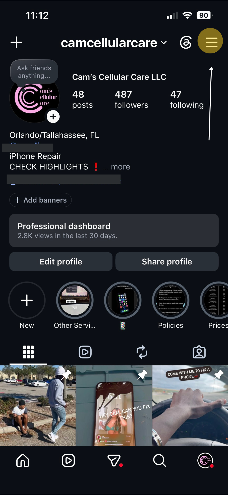
Tap on the Accounts Center banner at the top of the settings menu.
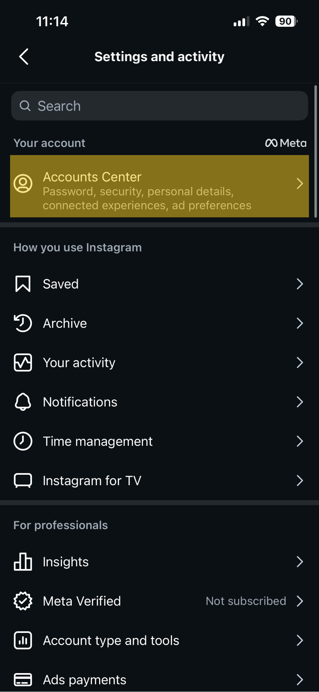
Scroll down under Account Settings and select Your information and permissions.
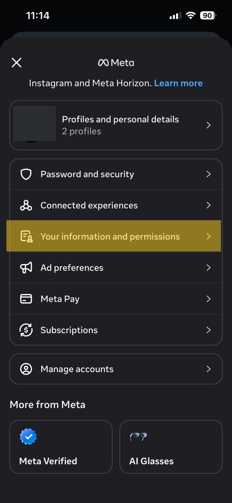
Tap on Export your information to begin requesting your data backup file.
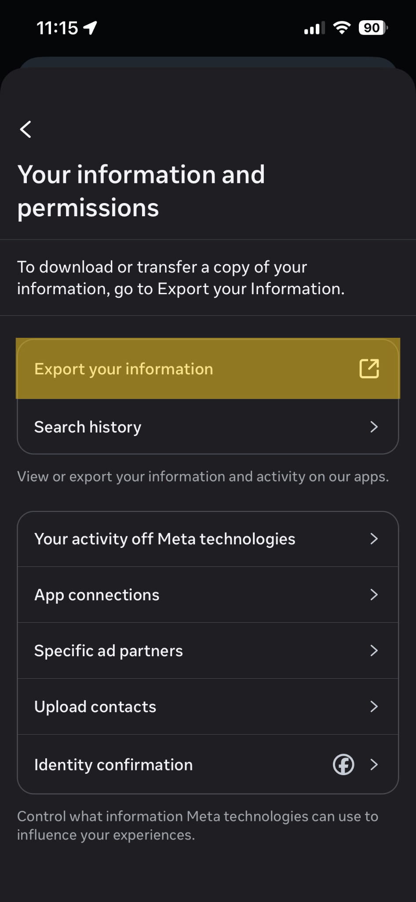
Tap the pink/purple button labeled Create export.
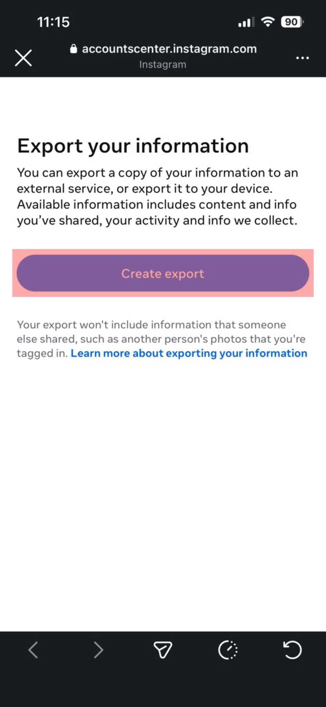
Choose the specific Instagram profile you want to verify from your connected account profiles list.
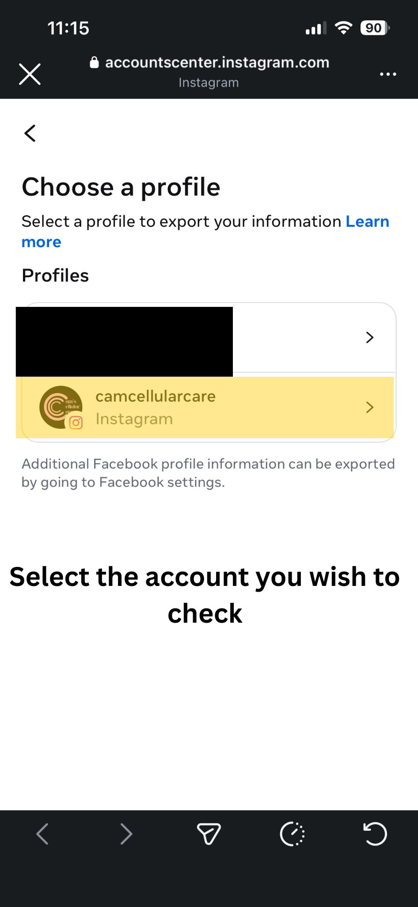
Select Export to device so the file downloads directly onto your smartphone or computer layout.
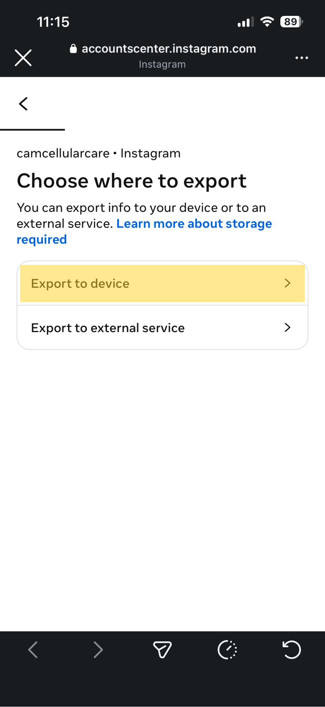
Before pressing start, check your configurations. Change the Format to HTML. You can also click Customize information to optimize the size.
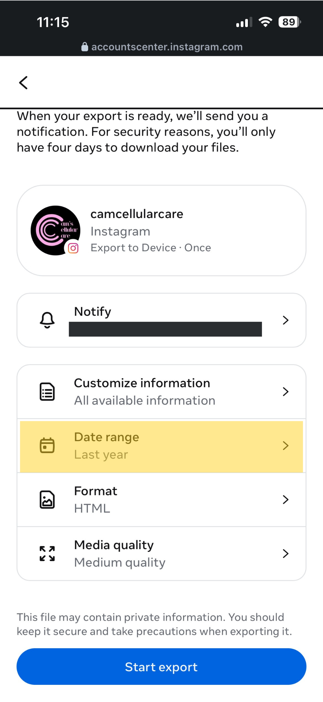
Make sure to change the Date range option to All time to ensure you gather every follower history trace accurately.
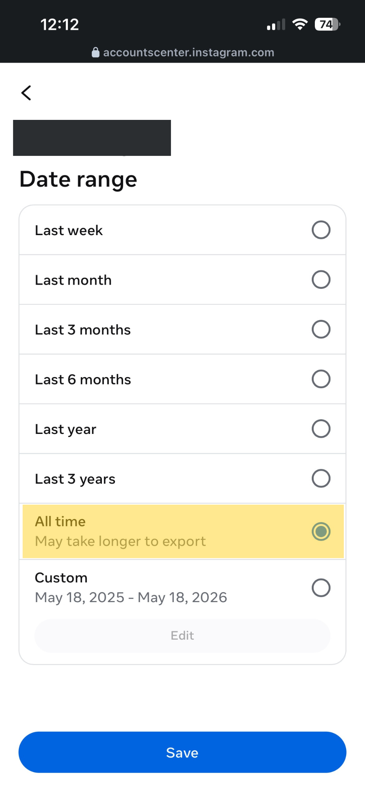
Uncheck all boxes except for Followers and following to make the file download almost instantly.
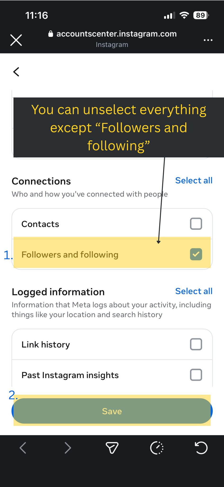
Review your choices to confirm the format is HTML, Date range is All Time, and only Followers and Following is checked. Tap Submit request.
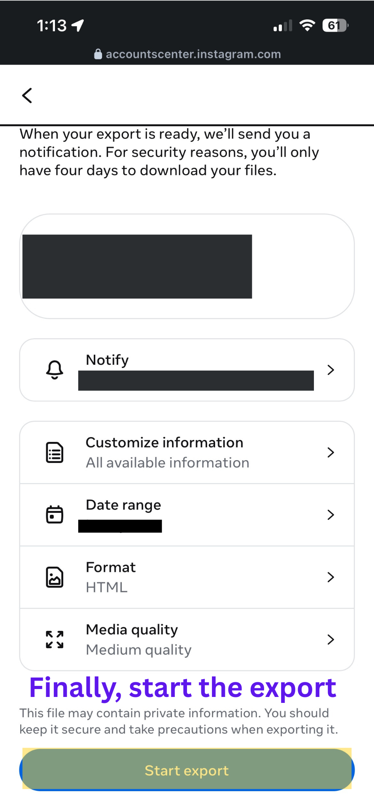
Your request will show as pending. Instagram will compile your data securely behind the scenes.
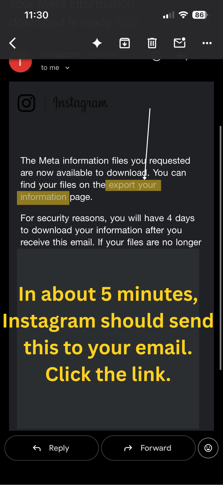
Once you get the notification or email that your file is ready, return to this screen and tap Download next to your requested files.
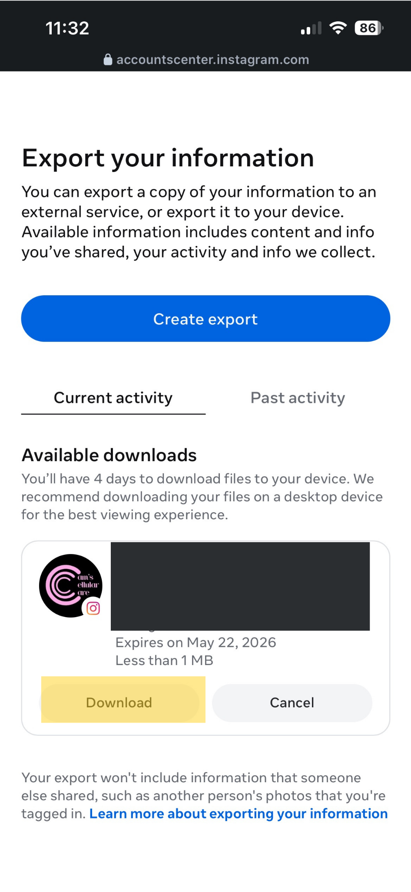
Locate the downloaded .zip archive in your files and extract/unzip it to access the folders inside.
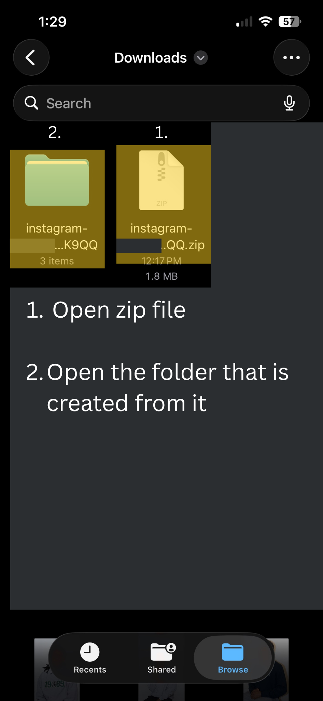
Inside the extracted folder structure, navigate into the directory named connections.
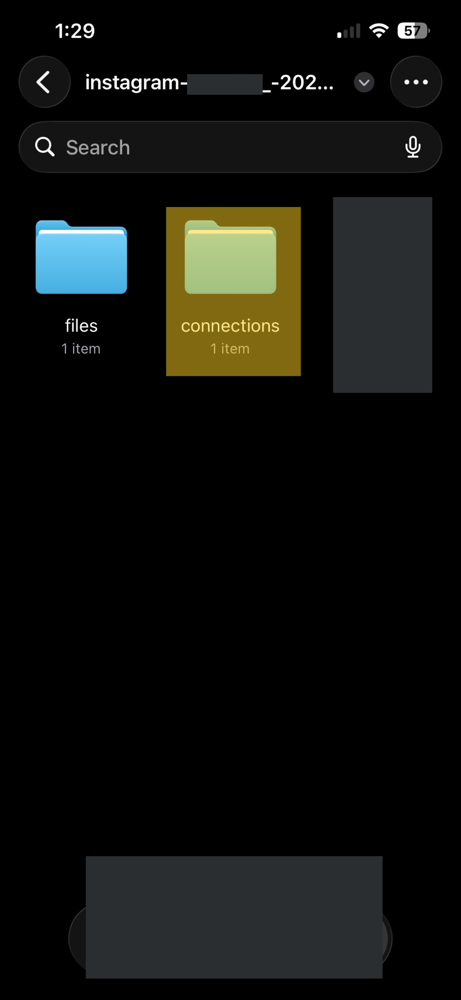
Inside connections, click on the subfolder explicitly named followers_and_following.
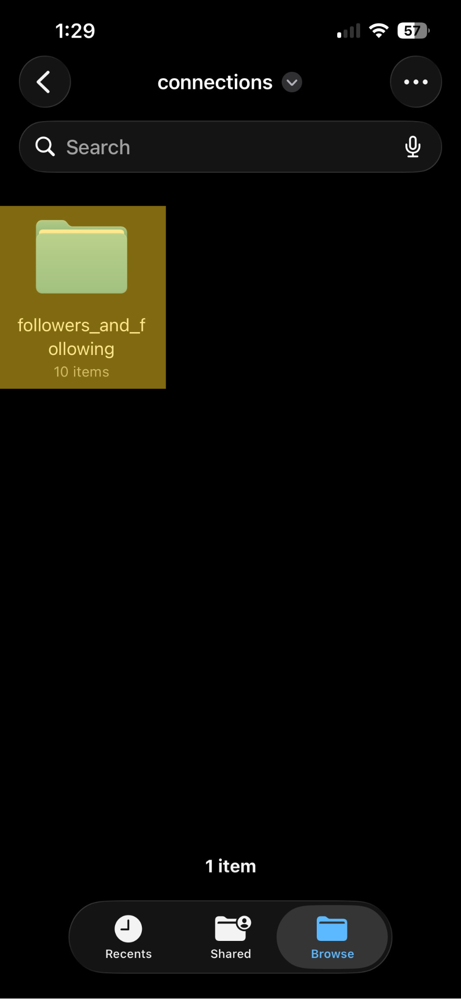
Here you will find your target files: following.html and followers_1.html. Upload or paste these files below to run your comparison!
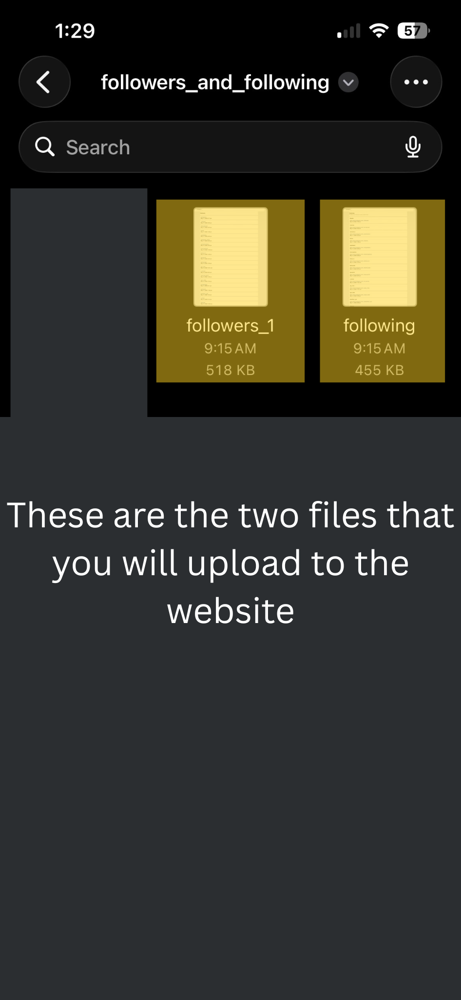